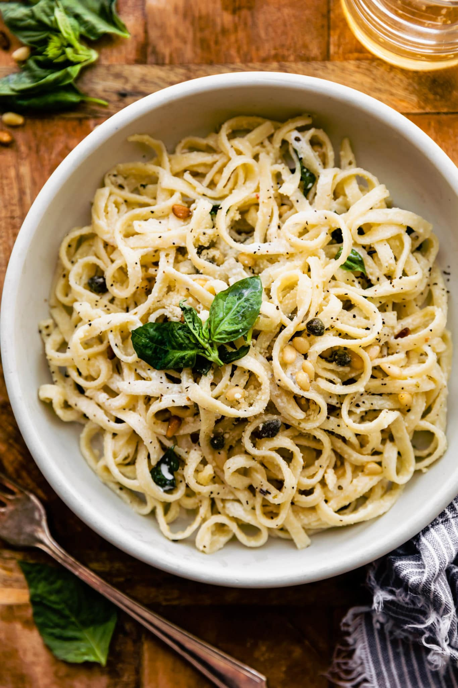

Odin Recipes
Gluten and Dairy Free Fettucine Alfredo

Description:
This is a gluten and dairy free take on a classic fettucine alfredo dish.
It combines ingredients that are low inflammatory and healthier than their counterparts. If
you struggle with allergies, sensitivities, or just want to create an overall healthier version
of fettucine alfredo, then this recipe is for you!
Ingredients
- gluten free pasta
- 1 can of white cannelini beans
- 2 cups of cooked cauliflower florets
- 1 cup unsweetened, non-dairy milk
- 2 tablespoons non-dairy butter
- 2 tablespoons nutritional yeast
- 1 teaspoon lemon juice
- 1 teaspoon minced garlic
- 1/2 teaspoon onion powder
- 1/2 teaspoon black pepper
Steps
- Bring a pot of water to boil and cook noodles for about 10 minutes.
- While noodles are cooking, combine all remaining ingredients into a blender and blend until smooth.
- Drain pasta once cooked and then add back to the pot.
- Combine sauce with noodles and enjoy!